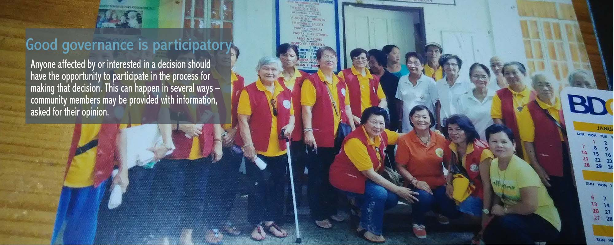
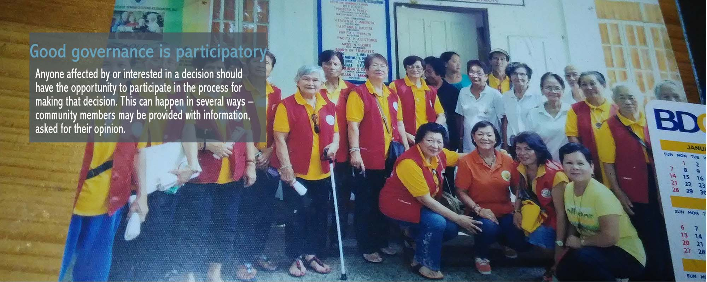
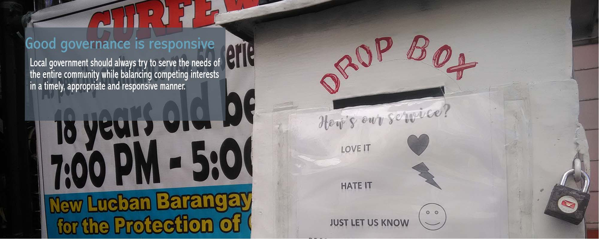
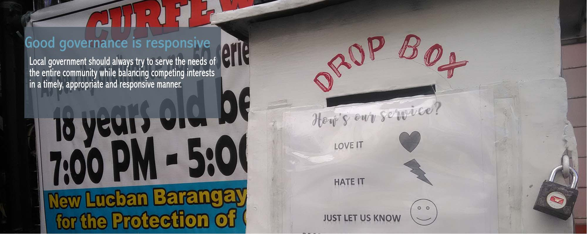

 

GOOD GOVERNANCE
Good governance is about the processes for making and implementing decisions. It’s not about making ‘correct’ decisions, but about the best possible process for making those decisions.
Good decision-making processes, and therefore good governance, share several characteristics. All have a positive effect on various aspects of local government including consultation policies and practices, meeting procedures, service quality protocols, councillor and officer conduct, role clarification and good working relationships.